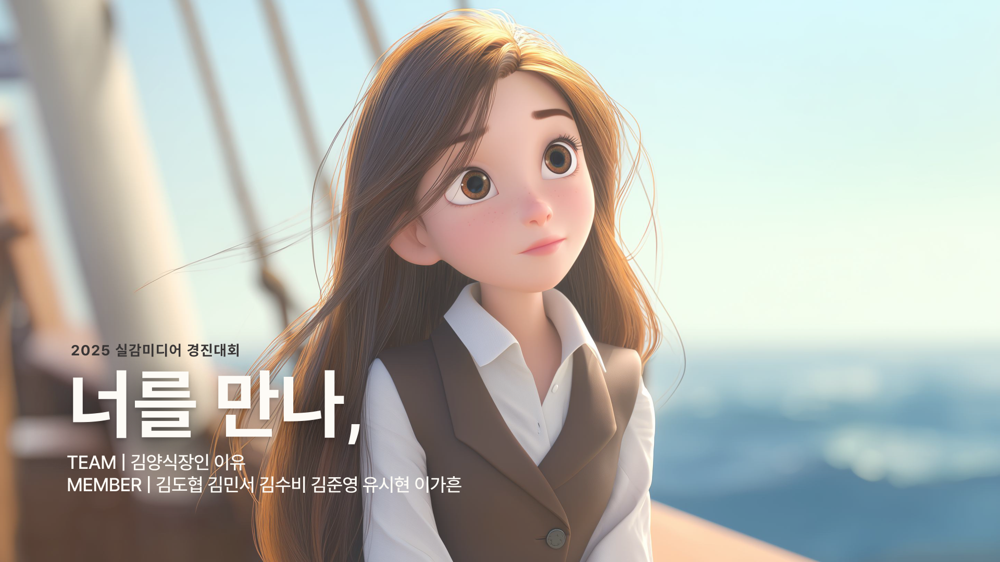

/
너를 만나,Meeting You
세 개의 화면으로 펼치는 만남과 회복.An encounter unfolding across three screens.

프로젝트 개요 · 참여Overview & contribution
군산 선유도의 오룡묘 설화를 현대적으로 재해석한 실감미디어 팀 프로젝트. 생성형 AI 영상과 3면 디스플레이로 감정의 흐름을 공간으로 확장합니다.A team-created immersive work reinterpreting the Oryongmyo folktale of Seonyudo, Gunsan. Generative AI animation and a three-screen display translate an emotional narrative into spatial experience.
구현과 접근Approach & implementation
정면은 서사의 핵심 장면을, 좌우는 풍경과 분위기를 전달합니다. 팀은 Midjourney, Runway, Kling, 음성·음악 생성 도구와 Premiere Pro를 활용해 영상·사운드·3면 동기화를 구성했습니다.The central screen carries the main narrative while the side screens extend its setting and atmosphere. The team combined Midjourney, Runway, Kling, generated voice and music, and Premiere Pro for visuals, sound, and synchronized three-screen presentation.
시각자료 · 데모Visuals & demo
